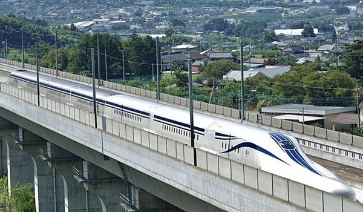
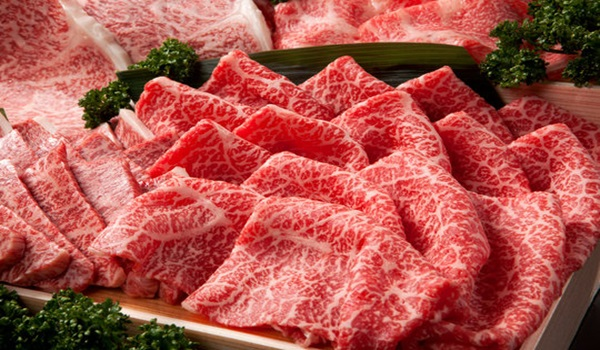
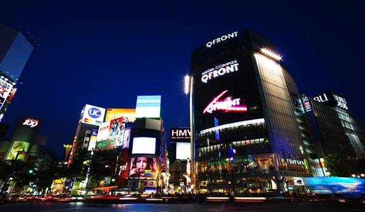

日本の魅力
世界が憧れる、日本ならではの素晴らしさ
おもてなし文化
日本では「おもてなし」の心が大切にされています。レストランやホテル、コンビニに至るまで、細やかなサービスが提供されます。
世界をリードする技術力

日本はハイテク技術の最先端を行く国です。新幹線、ロボット、電子機器など、多くの技術が世界に影響を与えています。
食の安全と品質

日本の食品は品質が高く、安全性も優れています。コンビニのお弁当、和牛、寿司など、世界的に評価されています。
治安の良さ

日本は世界でもトップクラスの治安の良さを誇ります。夜でも安全に歩ける街が多く、観光客にも人気の理由です。